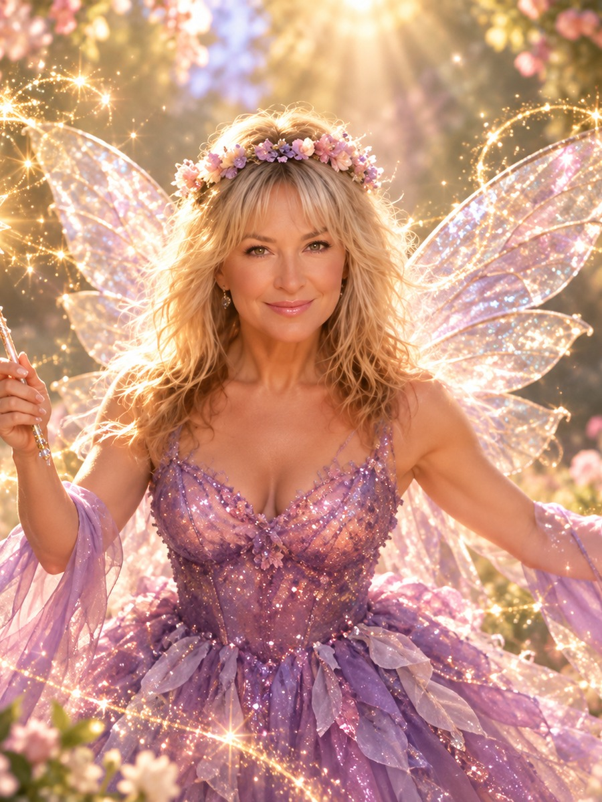
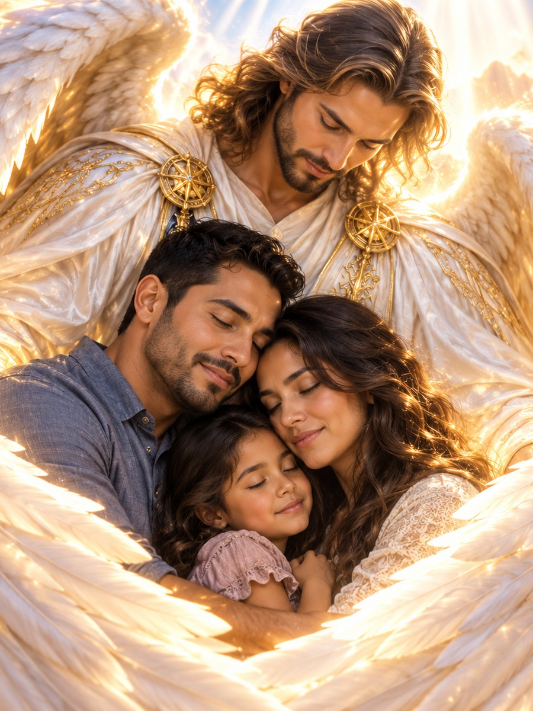
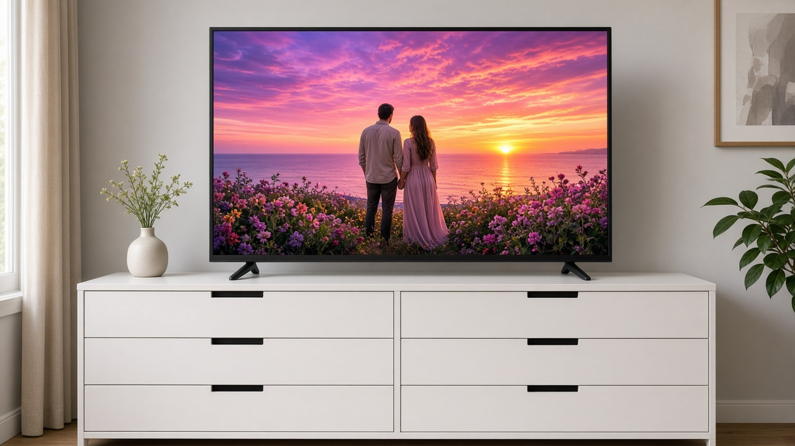
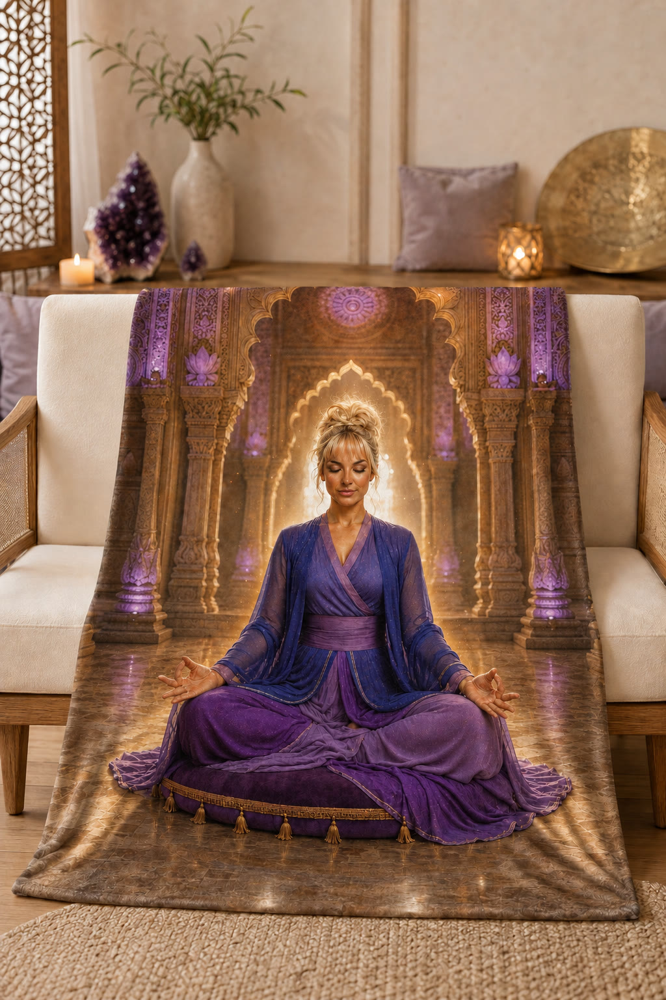

VISION THEME
Higher self
See yourself expressing the wisdom, courage and freedom you feel within.
SPIRITUAL VISIONS
A luminous, personalized vision of the life and spiritual connection you are exploring. See it. Feel it. Return to it.
A SPACE FOR YOUR SPIRITUAL PATH
Your intention sets the direction. The visual world can be mystical, grounded in nature, or a reflection of your own sacred symbols.

See yourself expressing the wisdom, courage and freedom you feel within.

Explore imagery of guidance, comfort or protection that is meaningful to you.

Picture spiritual growth in scenes of light, nature and everyday life.
FROM ENLIGHTENING VIBRATIONS
The spiritual world of Enlightening Vibrations lives here as a dedicated I AM REEL experience. Your reel or images may draw on sacred fire, meditation, nature, celestial light, meaningful symbols and affirmations that you choose.
You remain the main character. The vision is made to reflect your intention, not a prescribed belief system.
Begin your spiritual vision →
A DAILY PRACTICE
Keep the images and feelings close, then bring them into your choices and actions.

Return to your personalized reel.
Make time to pause and feel your intention.
Write what matters and take inspired steps.

Keep visual reminders in your everyday space.
THE SPIRITUAL COLLECTION
A meditation image may become art for your room or a journal cover. Personal keepsakes and printed pieces are planned as extensions of an approved vision.
See the Vision Collection →
Share the symbols, places and feelings that belong in your vision.
Create My Spiritual Vision →